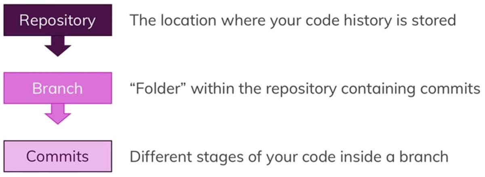

Github local notes
- Git is a version control system and allows you to manage your source code history efficiently.
- These terms can be confusing, especially for beginners. Git is a version control system which you can download to your computer, GitHub is a hosting & collaboration provider which hosts your Git projects.

The Main Commands
- git init - will turn our project into a project managed by Git. You should see the Initialized empty Git Repository info in your terminal, confirming that Git now monitors the project.
- git status - provides information about the current state.
- git add . - which will track changes in all files inside the Repository.
- git commit -m -adds the latest version of the code to our Branch, -m should provide a meaningful Commit message.
Github cloud notes
- Each Commit contains a unique ID, the author, the date and the Commit message (this -m "your message" part). “HEAD” just points to the latest Commit of our current Branch, more on that in the next chapter.
- The master Branch which contains your currently stable and running version of your website
- The feature Branch where you’re currently working on a new feature
Github cloud commands
- git branch -lists all Branches in our Repository.
- git log -in our terminal will display all Commits inside our Branch
- git checkout -b creates a new Branch based on the latest Commit of the Branch you’re currently working in.
- git checkout -b new-feature will create that new Branch named “new-feature”
- git add . and git commit -m "css added" will create a new Commit with these changes in our “new-feature” Branch.